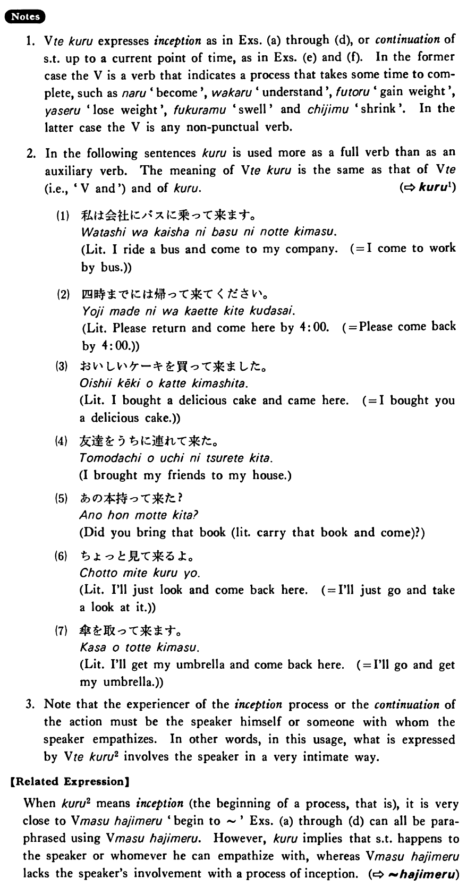

←
DoJG
→
来る・くる (2)
(B. 221)
Example sentences
(ksa).
私はコンピューターが少し分かって
来た・来ました
。
Now I have begun to understand computers.
(ksb).
私は色々日本の歴史書を読んで
来た・来ました
。
Up to now I've been reading various Japanese histories.
(a).
テニスをしていたら急に雨が降って
来た
。
Suddenly, while we were playing tennis, it began to rain.
(b).
午後から頭が痛くなって
来ました
。
My head began to ache in the afternoon. / My headache started in the afternoon.
(c).
私はこの頃太って
来ました
。
I've started to gain weight these days.
(d).
あの子はこの頃随分奇麗になって
来た
ね。
That girl has become very pretty lately, hasn't she?
(e).
今までたくさん本を読んで
来ました
が、これからも読んで行くつもりです。
Up to now I have read quite a few books and I intend to read from now on, too.
(f).
今まで遊んで
来ました
が、これからは一生懸命勉強するつもりです。
Up to now I haven’t been working hard (literally: have been playing), but from now on I intend to work very hard.
Formation
(i)
Vて
来る
膨らん
で来る
Something begins/has begun to swell
大きくな
って来る
Something begins/has begun to grow big
